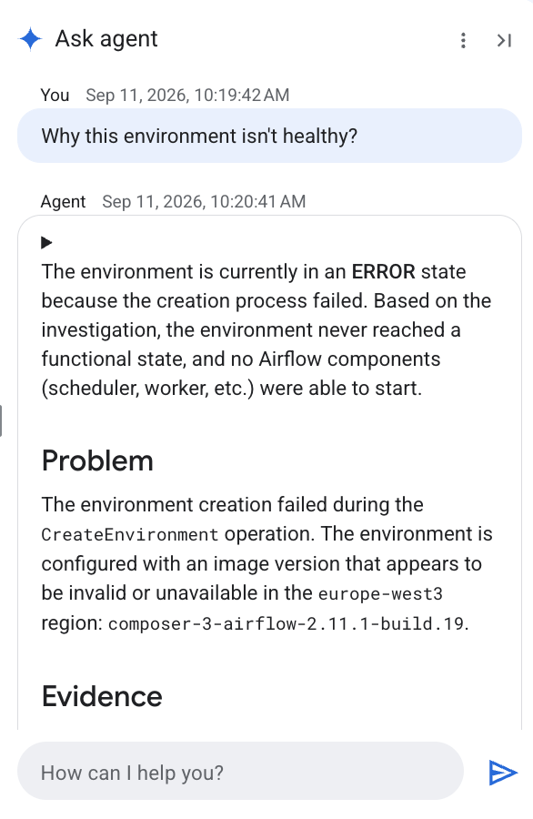

AI NEWS ISSUE 61
미국 온라인 쇼핑몰, AI 경유 방문 1년 새 두 배 넘어
AP가 전한 어도비 집계에 따르면, 11월 들어 AI 도구의 링크를 거쳐 미국 온라인 쇼핑몰에 들어온 방문 건수는 지난해 11월의 두 배를 넘었습니다. 그중 몇 건이 구매로 이어졌는지 알려면 쇼핑몰의 주문 기록까지 봐야 합니다.
AT A GLANCE
30초 요약
- 어도비가 집계한 미국 추수감사절 온라인 매출은 71억 달러였습니다. 이튿날인 블랙프라이데이 매출은 기사 마감 시점에 129억 달러로 전망했습니다.
- 문샷AI가 과학·공학 연구자를 모집합니다. 선정되면 Kimi 모델을 호출할 때 쓸 크레딧을 최대 2만 달러까지 받습니다. 첫 신청 마감은 12월 8일입니다.
- 구글 클라우드의 관리형 Airflow에서는 새 버전에서 손봐야 할 코드를 미리 점검할 수 있습니다. 에이전트가 호환성 보고서를 작성하면 개발자가 실행 환경에서 결과를 검증합니다.
미국 블랙프라이데이
같은 챗봇을 써도 쇼핑몰 방문 경로는 다르다
두 고객이 챗봇에서 운동화 가격을 비교합니다. 한 사람은 답변에 나온 링크를 눌러 쇼핑몰에 들어가고, 다른 사람은 평소 쓰던 쇼핑몰 앱을 직접 엽니다. 둘 다 챗봇의 도움을 받았지만 어도비의 AI 경유 통계에는 첫 번째 방문만 잡힙니다. AP의 11월 쇼핑 동향 취재 ↗
- 11월 26일 추수감사절 · 집계
- 71억 달러전년 추수감사절 대비 10.4% 증가
- 11월 27일 블랙프라이데이 · 전망
- 129억 달러전년 블랙프라이데이 대비 9.2% 증가 예상
두 금액은 모든 유입 경로를 합친 미국 온라인 매출 기준입니다. 기사 마감은 미국 동부시간 27일 오후 6시(한국시간 28일 오전 8시)였습니다. AP의 추수감사절 매출 보도 ↗
지난해 같은 기간보다 미국 소매 사이트의 AI 경유 방문이 얼마나 늘지 예측한 값입니다. 11~12월 전체 전망에는 추수감사절부터 사이버먼데이까지의 방문도 포함됩니다. 어도비의 9월 28일 연말 전망 ↗ · 어도비 한국어 분석과 원본 그래프 ↗
추천을 따라온 고객이 주문했는지 확인하려면
운영팀이 방문 기록과 주문 기록을 연결하면 링크를 통해 들어온 고객이 운동화를 샀는지 알 수 있습니다. 고객이 직접 결제한 주문과 에이전트에 맡긴 주문을 구별하려면 주문을 받은 시점에 요청 주체를 기록해야 합니다.
- 상품 비교고객이 외부 챗봇에 물어본 조건이나 함께 비교한 운동화까지 쇼핑몰에서 볼 수 있는 것은 아닙니다.
- 상품 페이지 방문고객이 처음 연 상품과 방문 경로를 기록합니다. 경로 정보가 없으면 ‘알 수 없음’으로 남깁니다.
- 구매 조건 확인고객이 찾던 사이즈의 재고가 있었는지, 처음 본 가격과 쿠폰·배송 조건이 결제할 때도 유효했는지 확인합니다.
- 주문 이후같은 기간에 들어온 방문을 경로별로 나눠 구매로 이어진 비율을 봅니다. 결제한 주문 중 취소하거나 반품한 비율도 비교합니다.
구매를 거의 결정한 고객일수록 마지막으로 가격을 확인하려고 AI를 썼을 수 있습니다. 경로별 구매 전환율을 해석할 때 고려할 차이입니다.
MOONSHOT AI · KIMI FOR SCIENCE
문샷AI, 연구자에게 Kimi 사용료 최대 2만 달러 지원

문샷AI(Moonshot AI)는 한국시간 11월 27일 자연과학, 공학, 관련 융합 분야의 연구자와 연구팀을 모집한다고 알렸습니다. 선정되면 Kimi 모델을 호출할 때 쓰는 API 크레딧을 받습니다. 문샷AI가 제시한 상한은 2만 달러로, 회사 추산 약 70억 토큰에 해당합니다. 실제 지원 규모는 연구에 필요한 사용량과 심사 결과에 따라 달라집니다. 선정된 연구자는 기술 지원을 받고 새 모델도 먼저 써 볼 수 있습니다.
첫 모집 마감일은 12월 8일입니다. 신청자는 연구 과제와 데이터 출처, 지금 연구를 진행하는 방법을 적습니다. Kimi를 어느 단계에서 쓰고 결과가 타당한지 어떻게 검증할지도 밝혀야 합니다. Kimi for Science 모집 안내 및 신청 ↗
예를 들어 상품 추천 알고리즘을 연구하는 팀이라면 Kimi에 비교할 알고리즘 후보와 분석 코드 초안을 요청할 수 있습니다. 연구팀은 같은 데이터로 후보들을 시험합니다. 더 정확한 추천을 내더라도 고객이 결과를 오래 기다려야 한다면 쓸 만한 방법일까요? 어느 정도의 지연까지 허용할지는 연구팀이 먼저 정할 기준입니다.
관련 배경 · GOOGLE CLOUD · 11월 26일 릴리스
Airflow를 업그레이드하기 전에 고쳐야 할 코드
구글 클라우드는 11월 26일 관리형 Airflow에 Agentic Upgrade Check를 추가했습니다. 개발자가 콘솔에서 옮겨 갈 버전을 고르면 에이전트가 사용자 계정의 권한으로 작업 코드와 환경 버킷에 저장한 파일·플러그인을 읽습니다. 추가로 설치한 파이썬 패키지와 기본값을 바꾼 설정도 점검합니다. 구글 클라우드 11월 26일 릴리스 노트 ↗
예를 들어 주문액에서 환불액을 뺀 뒤 판매자에게 정산하는 작업이 있다고 해 보겠습니다. Airflow에는 어떤 작업이 끝나야 다음 작업을 시작할 수 있는지 코드로 적습니다. 이 관계를 나타낸 그래프가 DAG입니다. 환불과 정산 작업이 같은 플러그인을 쓰면, 새 버전에서 그 플러그인이 동작하는지 양쪽 작업에서 확인해야 합니다.
호환성 보고서에서 확인할 항목
- 현재 DAG를 그대로 쓸 수 있는지, 동작이 달라지거나 코드를 고쳐야 하는지
- 문제를 발견한 파일과 그 이유, 제안하는 수정 방법
- 에이전트가 내용을 읽을 수 없어 호환성을 확인하지 못한 모듈·플러그인·패키지
점검은 읽기 전용입니다. 에이전트는 DAG나 셸 명령을 실행하거나 환경과 파일을 바꾸지 않습니다. 실제 주문 데이터 형식으로 정산이 되는지, 마감 시간 안에 끝나는지는 개발자가 새 버전의 테스트 환경에서 확인합니다. Airflow 환경 업그레이드 한국어 문서 ↗


헬로우 휴먼의 관점
쿠폰이 방송 전에 끝난다는 걸 미리 알 수 있다면
방송 편성을 맡은 PD가 내일 소개할 상품을 고릅니다. 재고는 충분합니다. 그런데 쿠폰 만료 시각과 편성표를 나란히 놓고 보니, 방송을 시작할 때는 이미 할인이 끝난 뒤입니다. 재고만 확인했다면 놓쳤을 조건입니다.
이때 조회용 에이전트가 할 일은 상품별 재고와 확인 시각, 쿠폰 만료 시각을 편성표 옆에 보여 주는 데까지입니다. PD는 할인 없이 소개할지, 편성을 바꿀지 결정합니다. 이런 도구를 만들 때는 담당자가 조회할 수 있는 정보 중 어디까지 외부 모델에 보내도 되는지 정해야 합니다.
개발자가 업그레이드를 준비할 때도 같은 질문이 남습니다. 에이전트 덕분에 코드를 찾는 시간이 줄어도 보고서를 검토하는 데 그만큼 걸린다면, 개발자가 아낀 시간은 얼마나 될까요?
모임에서 해볼 실험
호환성 문제 20건으로 세 가지 조사 방법을 비교한다
가상의 주문·쿠폰·정산 프로젝트에 문제 20건을 심습니다. 새 버전에서 사라진 API 호출 5건, 패키지 간 충돌 5건, 설정이나 기본값 변경 4건, 공통 모듈 변경이 다른 코드에 미치는 영향 4건, 실제로 실행해야 드러나는 문제 2건입니다. 정상 코드도 섞습니다. 세 방식 모두 같은 코드와 버전 변경 안내를 쓰고, 평가자만 문제 위치와 위험도, 검증에 필요한 테스트를 미리 적어 둡니다.
- A · 개발자 조사 개발자가 변경 안내와 코드를 읽고 영향을 받는 파일, 판단 근거, 필요한 테스트를 적습니다.
- B · 읽기 전용 에이전트 에이전트에 파일 검색과 읽기 권한을 주고 같은 형식의 보고서를 요청합니다.
- C · 정적 분석 도구와 에이전트 정적 분석 도구가 삭제된 API 호출처럼 규칙으로 찾을 수 있는 문제를 표시합니다. 에이전트는 코드를 읽고 그 함수를 부르는 다른 모듈까지 영향을 받는지 조사합니다.
주문 배치의 호환성 보고서 예시
가상의 주문 배치에서 삭제된 API 호출을 찾은 경우입니다. 보고서에 근거 파일과 변경 안내의 해당 절을 적고, 담당자가 실행할 테스트를 남깁니다.
{
"findingId": "COMPAT-001",
"module": "order-batch",
"category": "removed-api",
"riskLevel": "HIGH",
"evidence": {
"file": "src/batch/OrderJob",
"reference": "migration-guide#removed-api"
},
"recommendedAction": "대체 API 적용 검토",
"verification": [
"정상 주문 정산",
"같은 주문을 두 번 받아도 정산 금액이 같은지 확인"
],
"status": "REQUIRES_VERIFICATION"
}평가자는 세 보고서를 정답과 테스트 결과에 대조합니다. 코드에서 단서를 찾을 수 있는 18건 중 몇 건을 짚었는지, 정상 코드를 문제로 지목한 횟수는 얼마인지 셉니다. 실행해야 드러나는 2건은 따로 봅니다. 보고서가 검증이 필요한 이유와 문제를 재현할 테스트를 제시했는지가 기준입니다. 지목한 파일과 변경 안내에서 판단 근거를 다시 찾을 수 있는지도 확인합니다.
B와 C는 각각 개발자가 직접 조사한 A와 비교합니다. 고위험 문제를 한 건도 놓치지 않고 사람의 조사·검증 시간을 30% 이상 줄이는 것이 목표입니다. 모델 응답을 기다린 시간까지 더한 전체 소요 시간은 따로 잽니다. 재시도까지 합친 호출 비용을 검증을 통과한 프로젝트 수로 나누면 프로젝트 한 건에 든 모델 비용도 비교할 수 있습니다.
실험의 가정
프로젝트가 몇 개면 준비 시간을 만회할까
프로젝트마다 개발자가 직접 조사하고 검증하는 데 8시간, 에이전트 보고서를 검토하고 검증하는 데 3시간이 든다고 가정합니다. 도구를 처음 준비하는 데 6시간이 들면 첫 프로젝트는 9시간이 걸려 직접 조사할 때보다 1시간 더 듭니다. 같은 도구를 두 프로젝트에 쓰면 총 12시간입니다. 직접 조사할 때의 16시간보다 4시간 줄어듭니다.
- 개발자가 직접 조사
- 40시간
- 에이전트 활용 · 준비 시간 포함
- 21시간
19시간 절감 (47.5% 감소)
직접 조사 5 × 8 = 40시간 · 에이전트 활용 6 + 5 × 3 = 21시간
사람의 작업시간만 계산한 예시입니다. 모델 응답을 기다리는 시간과 호출 비용, 이후 도구를 유지보수하는 데 들이는 시간은 따로 측정합니다.
실험이 끝나면 놓친 호출 경로와 문제를 재현한 테스트를 함께 남깁니다. 같은 주문을 두 번 받았을 때의 정산액을 테스트에 적어 두면 다음 업그레이드에서도 그 조건을 확인할 수 있습니다. 여러 프로젝트에서 반복해서 찾은 API 변경은 정적 분석 규칙으로 옮길 수 있습니다.